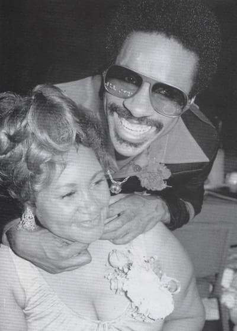

Mama Lula,
la luz de Stevie Wonder

La desaparición el 31 de mayo del 2006 de Lula Mae Hardaway dejó una
herida en el corazón de Stevie Wonder imposible de sanar. Es dificil olvidar a una madre, y más si como en el caso de Lula, lo dió todo por sus hijos. Nació un 11 de enero de 1930 en una granja de aparceros en Alabama, y tuvo una juventud dificil, donde mal sobrevivió con episodios de malos tratos, forzada a ejercer la prostitución y necesidad de robar para poder dar de comer a sus hijos. La mala fortuna se cebó en ella una vez más con la "discapacidad visual" de su tercer hijo Stevland Judkins (Stevie Wonder), de cuyo problema se culpó, pese a ser el exceso de oxígeno en la incubadora donde tuvieron que tratarle por nacer prematuramente el causante.
Pero la constancia y apoyo a su hijo para que su vida fuese tan natural y corriente como la de cualquier chiquillo, consiguió que esa pequeña e iluminada criatura, tocada por un don "divino", consiguiese transformarse de "patito feo en cisne", y al dia de hoy el mundo de la música pueda contar con un buen número de fantásticas canciones salidas de una mente privilegiada.
Algunas de esas canciones son de alguna u otra forma culpa de esta mujer, siempre dispuesta a ayudar en todo a su hijo, co-escribió junto a Stevie canciones como "I Was Made To Love Her", "You Met Your Match" , "I Don't Know Why I Love You", o la famosa "Signed, Sealed, Delivered I'm yours".
En su biografía cuenta ella como, estando su hijo Stevie al piano, un trozo de melodía, un trozo de letra, una y otra vez: "
Here I am baby. . . . Here I am baby." y de ella surgió ese "Signed, sealed, and delivered. I'm yours." (Firmado, sellado, y entregado, soy tuyo).
Es una canción emblemática para Stevie, en una sóla frase resumía la existencia de toda una vida, la de una madre dispuesta a dar su vida por él. Ha sido la inspiración y la mecha que ha empujado a realizar la pasada gira mundial de Stevie Wonder, cumpliendo el deseo de su madre para que Stevie estuviera de nuevo en contacto con sus fans y pudiera expresar en vivo esa entrega incondicional con todos aquellos que disfrutamos con la música de este hombre.
Stevie Wonder siempre ha agradecido a su madre su apoyo, tanto en lo inmaterial y espiritual en forma de amor, como en lo material, preocupado para que su madre, tras una dura vida de juventud, no tuviera que preocuparse más que de sus hobbys; pescar, cocinar, carreras de caballos, la iglesia..., Stevie dijo una vez : "nosotros rezamos para que nuestra madre tenga lo mejor, queremos que sea una reina...me siento un millón de veces bendecido por lo que he recibido en mi vida".
Pero el 31 de mayo del 2006, la desgracia retornó de nuevo a esta mujer de ojos brillantes.
Su luz dejó de brillar dejando en penumbras el corazón de Stevie. La gira que dió como resultado el DVD en directo
Live At Last, fue ese tributo que Stevie Wonder quería dedicar a su madre, al igual que la publicación de un futuro álbum titulado "Gospel Inspired By Lula" donde quedará reflejado el cariño y amor de un hijo agradecido a su madre.

Stevie Wonder y su madre
Letra Signed, Sealed Delivered, I'm Yours
Like a fool I went and stayed too long
Now I'm wondering if your love's still strong
Oo baby, here I am, signed, sealed delivered, I'm yours
Then that time I went and said goodbye
Now I'm back and not ashamed to cry
Oo baby, here I am, signed, sealed delivered, I'm yours
Here I am baby
Oh, you've got the future in your hand
(signed, sealed delivered, I'm yours)
Here I am baby,
oh, you've got the future in your hand
(signed, sealed, delivered, I'm yours)
I've done alot of foolish things
that I really didn't mean
Hey, hey, yea, yea, didn't I, oh baby
Seen alot of things in this old world
When I touched them they did nothing, girl
Oo baby, here I am, signed, sealed delivered, I'm yours, oh I'm yours
Oo-wee babe you set my soul on fire
That's why I know you are my only desire
Oo baby, here I am, signed, sealed delivered, I'm yours
Here I am baby
Oh, you've got the future in your hand
(signed, sealed delivered, I'm yours)
Here I am baby,
oh, you've got the future in your hand
(signed, sealed, delivered, I'm yours)
I've done alot of foolish things
that I really didn't mean
I could be a broken man but here I am
With your future, got your future babe (here I am baby)
Here I am baby (signed, sealed delivered, I'm yours)
Here I am baby, (here I am baby)
Here I am baby (signed, sealed delivered, I'm yours)
Here I am baby, (here I am baby)
Here I am baby (signed, sealed delivered, I'm yours)